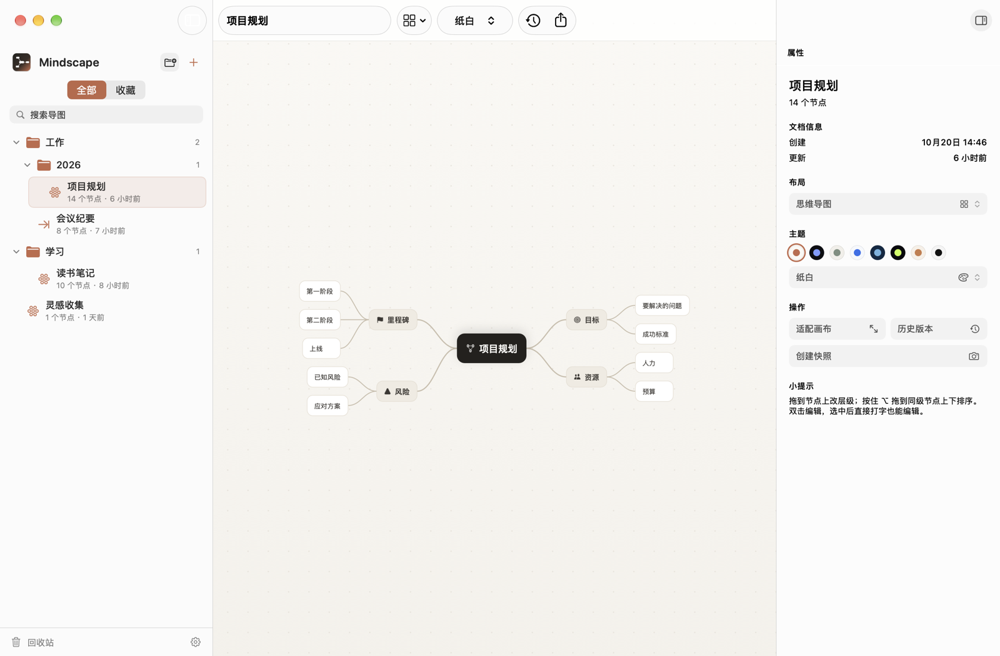
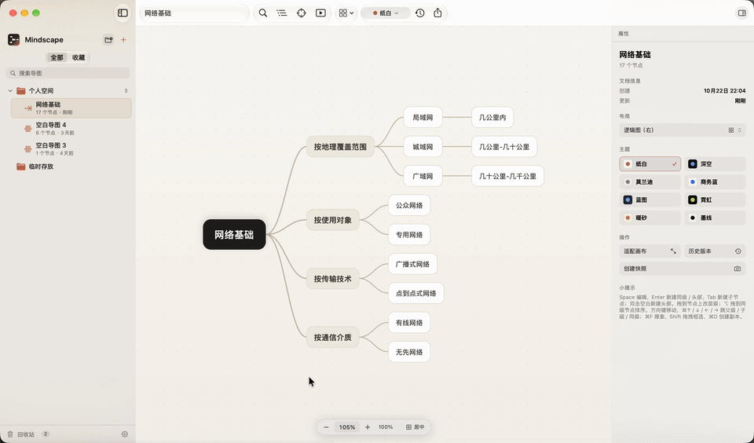
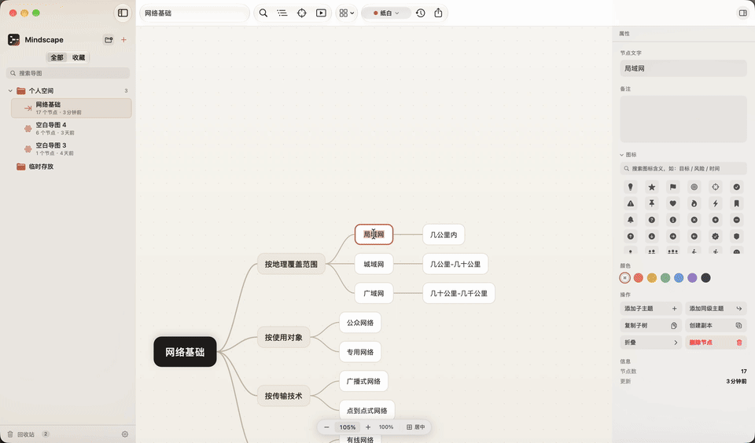
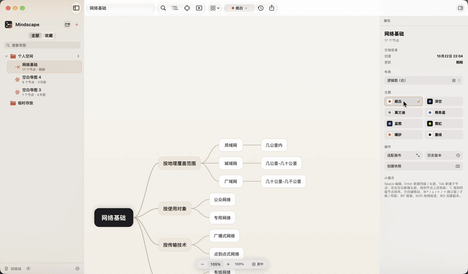
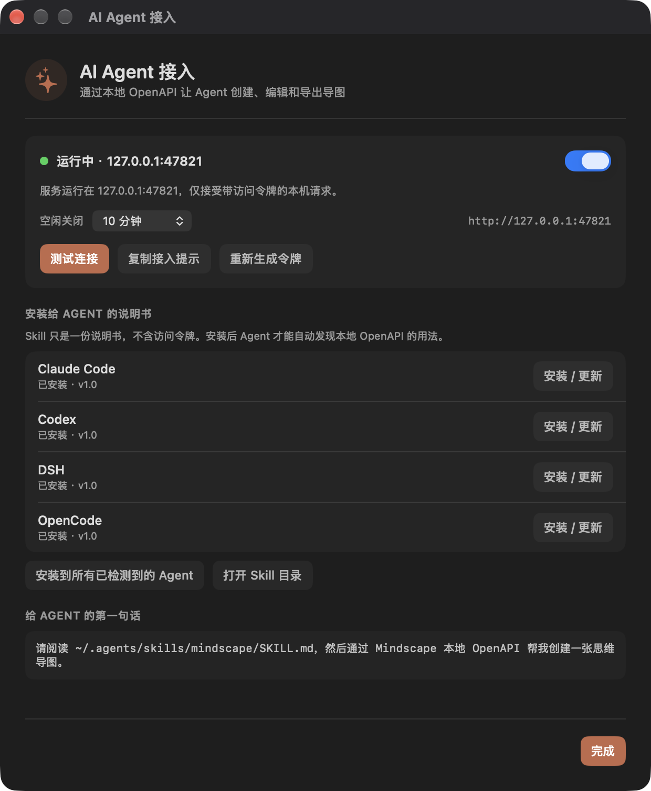

Mindscape
一个 4.9 MB 的 macOS 原生思维导图。数据就是一个 sqlite 文件——不登录、不订阅，默认不联网，只在检查更新时访问 GitHub。

为什么是 Mindscape
不是又一个网页套壳的思维导图
画布是自绘的 NSView，不是 WebView。所以大图缩放跟手、启动即时、安装包只有 4.9 MB。
原生性能
自绘 Core Graphics 画布，缩放时直接变换坐标系，而不是缩放上千个视图。大图拖拽、折叠都不掉帧。
数据是一个文件
所有导图存在一个 SQLite 文件里，WAL 模式自动保存。断网可用，没有账号，没有遥测；默认不联网，只在检查更新时访问 GitHub。
8 种布局 · 8 套主题
思维导图、逻辑图、组织架构、树形、时间轴、括号图、自由布局。浅色/深色主题按文件分别记忆；界面可跟随系统、浅色或深色。
大纲 · 搜索 · 专注
⇧⌘O 打开与画布双向同步的大纲，⌘F 输入即定位，⇧⌘F 只留当前分支。长图不至于迷路。
演示模式
⇧⌘P 按一级分支自动分页的独立演示窗口，每页保留上下文，适合会议讲解与评审。
能带走
PNG（1x/2x/3x）、矢量 PDF、Markdown、OPML、JSON 五种导出，也能导入 Markdown / OPML / JSON。文件永远是你的。
折叠
收起一个分支，留下一个数字
折叠后控件变成常驻的数字圆，直接告诉里面藏了多少个节点，点一下就展开。父节点先动，子节点按深度依次跟上。

中文输入法
打字的时候，节点跟着长，不跳
用网页技术做的思维导图，中文组字几乎是通病：拼音还没上屏，节点先按假名宽度折了行，候选一选完又弹回去，光标和候选框分离。
- 组字时节点按候选实时变宽，不会「先折行再弹回」
- 字号与画布严格一致，任何缩放比例下都不跳
- 候选框始终贴着光标，长文本自动换行、左右内边距对称
- Enter 提交、Shift+Enter 换行、Esc 取消并恢复

配色
8 套主题，开箱就好看
下面是这 8 套主题在应用里的真实取色，不是设计师另外调的一套。

安装
三步，不到一分钟
下载 dmg
从 Releases 取最新版，当前构建是 Universal（Apple Silicon 与 Intel 都能跑）。
拖进 Applications
打开 dmg，把 Mindscape 拖到 Applications 文件夹，然后推出磁盘映像。
第一次打开
右键 →「打开」，或按下面的命令去掉隔离属性。之后就正常双击启动。
当前版本是 ad-hoc 签名、没有公证，Gatekeeper 可能拦住首次启动。用这条命令去掉隔离属性即可（只需一次）：
xattr -dr com.apple.quarantine /Applications/Mindscape.app从 XMind / FreeMind 来？在源应用里导出 OPML，回到 Mindscape 按 ⇧⌘I 导入即可，结构和文字都会保留。详细步骤 →
当前为 0.6.0 正式版。首次启动会依次询问自动检查更新、是否一键安装 Agent Skill；安装面板的开启选项默认勾选。
AI Agent
让你的 Agent 直接画图
Mindscape 在 App 内提供只监听本机的 OpenAPI 服务。Claude Code、Codex、DSH、OpenCode 装上 Skill 后，就能建目录、画导图、导出。
1. 打开开关
设置 → AI Agent，允许本地 Agent 操作。默认关闭；Agent 调用时才启动，空闲 10 分钟自动关闭。
2. 安装 Skill
一键写入四个 Agent 的 skills / AGENTS.md；也可以复制到任意目录，或直接让 Agent 读 SKILL.md。
3. 对 Agent 说话
“请阅读 ~/.agents/skills/mindscape/SKILL.md，然后建一张项目规划导图。”

详细图文教程见 GitHub：docs/ai-agent.md →。服务只监听 127.0.0.1，token 文件权限 0600。